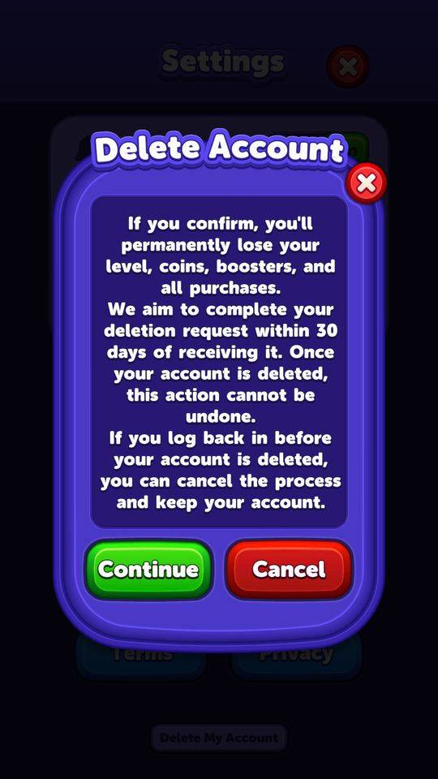

Tài khoản người chơi
PlayerService (95 method) là hồ sơ trung tâm của một tài khoản.
Mô tả
- PlayerService (95 method) là hồ sơ trung tâm của một tài khoản.
- Ngoài tiến độ màn chơi, nó còn lưu một lượng lớn chỉ số hành vi mà game dùng để phân khúc và định giá: mô hình quy nguồn cài đặt từ Adjust, CPM quảng cáo đầu tiên và gần nhất tính bằng đô la, số phiên chơi, số lần chơi lại, số màn thắng ngay lần đầu, phiên bản lúc cài lần đầu.
- Kèm theo đó là luồng xoá tài khoản theo yêu cầu pháp lý.
Còn thiếu / chưa xác minh
Mở khóa & điểm vào
Luôn hoạt động.
Điểm vào:
- Khởi động app
- Màn hình cài đặt (xoá tài khoản)
Cách hoạt động
- PlayerModel được nạp qua ISaveLoad và đồng bộ qua ISyncable.
- Tiến độ: GetProgress / GetLevel / IncreaseLevelProgress / SetLevelProgress, riêng Arena có bộ đếm riêng (GetArenaProgress, GetArenaSequentialId, GetCumulativeArenaProgress, GetArenaJoinCount).
- GetMaxLevelCount và GetMaximumAllowedLevelProgressForUser chặn trần tiến độ.
- Chỉ số hành vi: GetSessionCount, GetRetryCount, GetDailyRetryCount, GetFirstTryLevelWinCount, GetStreakCount, GetLastSelectedSeedId, GetIsLevelInProgress.
- Chỉ số kiếm tiền: SetAttributionModel(AdjustAttributionModel) từ Adjust, TryCacheFirstCpm / GetFirstCpmAsDollar và TryCacheLastCpm / GetLastCpmAsDollar.
- Cờ tương thích phiên bản: TrySetFirstInstallApplicationVersion, GetParsedFirstInstallVersion, ParseFlexibleVersion(stored), IsOldUserBefore920, CanUseNewFailFlow, CanUsePlayIntegrityToken — game phân biệt người cài trước và sau bản 9.2.0 để bật luồng khác nhau.
- Xoá tài khoản: AccountDeleteService phối hợp với LoginService, trạng thái theo DeletionState (None, InProgress, Fulfilled) và AccountDeleteStatus (None, InProgress, Deleted); SyncService.DeleteAllDataAsync thực hiện xoá; ErrorCode có bốn mã riêng cho luồng này.
Luồng chi tiết theo code
PlayerModel được nạp qua ISaveLoad và đồng bộ qua ISyncable. Tiến độ: GetProgress / GetLevel / IncreaseLevelProgress / SetLevelProgress, riêng Arena có bộ đếm riêng (GetArenaProgress, GetArenaSequentialId, GetCumulativeArenaProgress, GetArenaJoinCount). GetMaxLevelCount và GetMaximumAllowedLevelProgressForUser chặn trần tiến độ. Chỉ số hành vi: GetSessionCount, GetRetryCount, GetDailyRetryCount, GetFirstTryLevelWinCount, GetStreakCount, GetLastSelectedSeedId, GetIsLevelInProgress. Chỉ số kiếm tiền: SetAttributionModel(AdjustAttributionModel) từ Adjust, TryCacheFirstCpm / GetFirstCpmAsDollar và TryCacheLastCpm / GetLastCpmAsDollar. Cờ tương thích phiên bản: TrySetFirstInstallApplicationVersion, GetParsedFirstInstallVersion, ParseFlexibleVersion(stored), IsOldUserBefore920, CanUseNewFailFlow, CanUsePlayIntegrityToken — game phân biệt người cài trước và sau bản 9.2.0 để bật luồng khác nhau. Xoá tài khoản: AccountDeleteService phối hợp với LoginService, trạng thái theo DeletionState (None, InProgress, Fulfilled) và AccountDeleteStatus (None, InProgress, Deleted); SyncService.DeleteAllDataAsync thực hiện xoá; ErrorCode có bốn mã riêng cho luồng này.
Ảnh chụp màn hình (1)
1 ảnh chụp trong game (LDPlayer, bản 1006, tài khoản thử level 320 → 350 (07/10/2026)). Bấm ảnh để phóng to; nhãn UC dẫn tới use case tương ứng.


Số liệu chính
| Chỉ số | Giá trị | Nguồn |
|---|---|---|
| Ba kiểu khởi động app | FirstTime=0, Reinstall=1, Regular=2 | LaunchStatus — enum LaunchStatus |
| Toàn bộ save game phía client | 29 khoá / 10 model JSON | PlayerPrefs — appendix/save-state.md |
Use case (6)
Bấm vào từng use case để mở. Mở/đóng tất cả
UC-01 Tăng tiến độ sau khi thắng màn
Các bước- IncreaseLevelProgress()
- TryIncreaseFirstTryLevelWinCount() nếu thắng ngay lần đầu
- IncreaseStreakCount()
- MarkForLateUpdate để đồng bộ
| Actor | System |
|---|---|
| Trigger | Thắng màn |
| Điều kiện | - |
| Kết quả | Mở màn kế tiếp |
| Quy tắc / số liệu | GetMaximumAllowedLevelProgressForUser() chặn không cho vượt số màn hiện có (999) |
| Evidence | PlayerService.IncreaseLevelProgress; TryIncreaseFirstTryLevelWinCount; GetMaximumAllowedLevelProgressForUser |
UC-02 Ghi nhận CPM quảng cáo của người chơi
Các bước- TryCacheFirstCpm(cpmAsDollar) lưu CPM lần đầu
- TryCacheLastCpm(cpmAsDollar) cập nhật CPM gần nhất
- AdService.OnCpmChanged() kích hoạt lấy lại cấu hình quảng cáo
| Actor | System |
|---|---|
| Trigger | Xem quảng cáo |
| Điều kiện | - |
| Kết quả | Game biết mỗi người chơi đáng giá bao nhiêu tiền quảng cáo |
| Quy tắc / số liệu | Đây là đầu vào trực tiếp cho việc phân khúc: người có CPM cao có thể nhận cấu hình quảng cáo khác |
| Evidence | PlayerService.TryCacheFirstCpm; GetLastCpmAsDollar; AdService.OnCpmChanged |
UC-03 Quy nguồn cài đặt
Các bước- AdjustInitializer.OnGetAttribution(attribution)
- PlayerService.SetAttributionModel(adjustAttributionModel)
- AdService.OnAttributionModelChanged() lấy lại cấu hình quảng cáo
| Actor | System |
|---|---|
| Trigger | Adjust trả attribution |
| Điều kiện | - |
| Kết quả | Biết người chơi đến từ chiến dịch nào |
| Quy tắc / số liệu | HasAttributionModel() cho biết đã có dữ liệu chưa |
| Evidence | PlayerService.SetAttributionModel; HasAttributionModel; AdjustInitializer.OnGetAttribution |
UC-04 Phân biệt người chơi cũ và mới
Các bước- TrySetFirstInstallApplicationVersion() ghi phiên bản lúc cài đầu
- ParseFlexibleVersion(stored) đọc lại (chấp nhận nhiều định dạng)
- IsOldUserBefore920() phân biệt
- CanUseNewFailFlow() / CanUsePlayIntegrityToken() bật tính năng tương ứng
| Actor | System |
|---|---|
| Trigger | Khởi động |
| Điều kiện | - |
| Kết quả | Người chơi cũ không bị đổi trải nghiệm đột ngột |
| Quy tắc / số liệu | Mốc phân chia là bản 9.2.0; ParseFlexibleVersion tồn tại vì các bản cũ ghi phiên bản theo định dạng khác nhau |
| Evidence | PlayerService.IsOldUserBefore920; CanUseNewFailFlow; ParseFlexibleVersion |
UC-05 Yêu cầu xoá tài khoản
Các bước- AccountDeleteService gửi yêu cầu qua AccountDeleteRemoteService
- DeletionState = InProgress
- LoginService.TryGetDeletionStatus(out status) theo dõi
- Hoàn tất -> DeletionState = Fulfilled, SyncService.DeleteAllDataAsync()
- Mọi service IDeletable gọi DeleteData() của mình
| Actor | Player |
|---|---|
| Trigger | Bấm xoá trong cài đặt |
| Điều kiện | rootLevelConfigModel.accountDeleteEnabled = true |
| Kết quả | Xoá dữ liệu theo yêu cầu người dùng |
| Quy tắc / số liệu | Server đang bật accountDeleteEnabled. Có luồng huỷ yêu cầu (ErrorCode.DeletionNotCancellable báo khi không huỷ được nữa) |
| Evidence | AccountDeleteService; enum DeletionState; enum AccountDeleteStatus; SyncService.DeleteAllDataAsync; enum ErrorCode |
UC-06 Toàn bộ trạng thái lưu trên máy
Các bước- Unity ghi PlayerPrefs ra
shared_prefs/<pkg>.v2.playerprefs.xml - Cả tên khoá lẫn giá trị đều URL-encode, phần lớn giá trị là chuỗi JSON
- Mỗi service ISyncable giữ một model riêng trong đó
| Actor | System |
|---|---|
| Trigger | Chơi game |
| Điều kiện | - |
| Kết quả | 29 khoá, trong đó 10 là model JSON |
| Quy tắc / số liệu | Đọc được trên tài khoản thử nghiệm: PlayerModelV2 (level 1, levelProgress 7, retryCount 1, firstTryLevelWinCount 3, sessionCount 2, firstCpmAsDollar 3,43), InventoryModelV2 ( 1.060 coin, 3 mỗi loại booster kể cả RocketLightBall/DurationLightBall), SegmentDataModelV2 (non-purchaser), ObstacleMigrationModelV2, GaeModelV2, StreakModelV2, WeeklyTournamentModelV2, PreBoosterModelV2, AccountDeleteDataModelV2, LastLoginTimeModelV2. Các khoá định danh đã che trong tài liệu. 1.060 coin, 3 mỗi loại booster kể cả RocketLightBall/DurationLightBall), SegmentDataModelV2 (non-purchaser), ObstacleMigrationModelV2, GaeModelV2, StreakModelV2, WeeklyTournamentModelV2, PreBoosterModelV2, AccountDeleteDataModelV2, LastLoginTimeModelV2. Các khoá định danh đã che trong tài liệu. |
| Evidence | appendix/save-state.md; DeviceRuntime2/decoded_prefs.json |
Cấu hình (4)
Gộp mọi nguồn: const trong code, JSON mặc định trong Resources, bảng static, storage key, AB test, cờ server.
| Nguồn | Key | Kiểu | Giá trị | Ý nghĩa | Nơi định nghĩa |
|---|---|---|---|---|---|
| code const | LaunchStatus | enum | FirstTime=0, Reinstall=1, Regular=2 | Ba kiểu khởi động app | enum LaunchStatus |
| code const | DeletionState / AccountDeleteStatus | enum | None, InProgress, Fulfilled / None, InProgress, Deleted | Trạng thái xoá tài khoản ở hai tầng | enum DeletionState, AccountDeleteStatus |
| storage key | Chỉ số hành vi lưu trong PlayerModel | list | sessionCount, retryCount, dailyRetryCount, firstTryLevelWinCount, streakCount, lastSelectedSeedId, isLevelInProgress, firstCpm, lastCpm, attributionModel, firstInstallApplicationVersion | Đây là tập dữ liệu game dùng để phân khúc và điều chỉnh trải nghiệm | PlayerService |
| storage key | PlayerPrefs | xml | 29 khoá / 10 model JSON | Toàn bộ save game phía client | appendix/save-state.md |
Backend / server
| Command | Chiều | Mục đích |
|---|---|---|
delete account | client→server | yêu cầu và theo dõi tiến trình xoá |
Storage keys
PlayerModel com.grandgames.catblockjam.v2.playerprefs.xml
Chưa đọc được / ghi chú
- PlayerService có 95 method, tài liệu này mới mô tả các nhóm chính.
- Ý nghĩa chính xác của 'new fail flow' (CanUseNewFailFlow) chưa dựng lại được.
Tính năng liên quan
Giao tiếp với backend và đồng bộ dữ liệu Phân khúc người chơi Quảng cáo Analytics và đo lường Cài đặt
Nguồn đã đọc
- PseudoC/.../Application/Player/Scripts/PlayerService.c
- PseudoC/.../Application/AccountDelete/Scripts/*.c